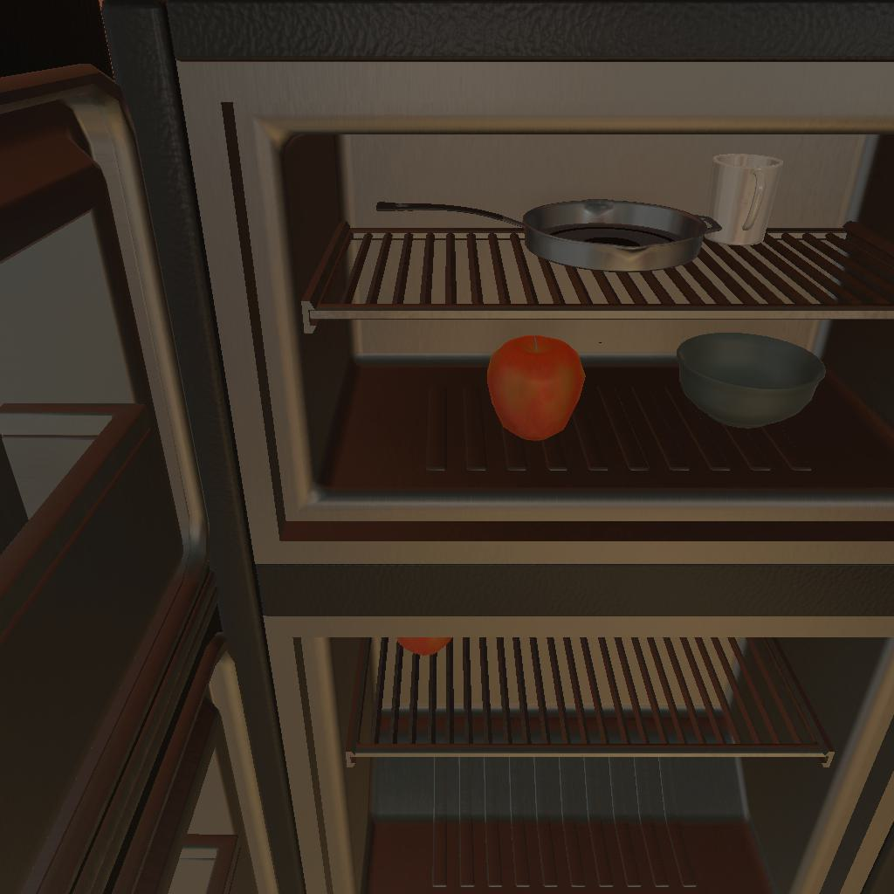

---------------------------------------------------------task: 19---------------------------------------------------------
--------------------------------------------------------------------------------------------------------------------------------------------------------------------
--------------------------------------------------------------------------------------------------------------------------------------------------------------------
Step:--------------------------------------------------------------------------8-------------------------------------------------------------------------------
----------------------------------------
VLM Prompt:
Image1:
**Instruction**
1. Analyze the provided image to identify all visible household objects, focusing on those relevant to the task description "cool some tomato and put it in microwave."
2. Use the analysis of the image and the task hint "The agent must find an object of the desired type, pick it up, go to a fridge, cool the object with the fridge, then find the correct location to place it, and put it down there. The agent does not need to use the fridge button or open the fridge to cool the object, and the agent just needs to do action that is "cool the object with the fridge"." to answer the question: what is the most reasonable action in the choices for the task description "cool some tomato and put it in microwave"?
4. Decide and write the answer using the template: The answer is: (i): , where i is the real number. If there is no desired object in the image, search every place based on **Initial Observation** to find the object. And if no one is exactly correct, choose a similar answer.
**Initial Observation**
You are in the middle of a room. Looking quickly around you, you can see cabinet (1-15), fridge (1), countertop (1-4), drawer (1-4), microwave (1), toaster (1), coffeemachine (1), garbagecan (1), sink (1), stoveburner (1-3), sinkbasin (1)
**Answer Choices**
(1): go to cabinet 1
(2): go to cabinet 2
(3): go to cabinet 3
(4): go to countertop 1
(5): go to cabinet 4
(6): go to cabinet 5
(7): go to cabinet 6
(8): go to cabinet 7
(9): go to drawer 1
(10): go to drawer 2
(11): go to cabinet 8
(12): go to drawer 3
(13): go to cabinet 9
(14): go to cabinet 10
(15): go to drawer 4
(16): go to microwave 1
(17): go to cabinet 11
(18): go to toaster 1
(19): go to cabinet 12
(20): go to cabinet 13
(21): go to cabinet 14
(22): go to cabinet 15
(23): go to countertop 2
(24): go to coffeemachine 1
(25): go to garbagecan 1
(26): go to countertop 3
(27): go to countertop 4
(28): go to sink 1
(29): go to stoveburner 1
(30): go to stoveburner 2
(31): go to stoveburner 3
(32): go to sinkbasin 1
(33): open fridge 1
(34): close fridge 1
(35): take pan 1 from fridge 1
(36): take bowl 1 from fridge 1
(37): take apple 1 from fridge 1
(38): take mug 1 from fridge 1
(39): take apple 2 from fridge 1
**Answer**
Let's think step by step by following the instructions.
----------------------------------------
----------------------------------------
Original Response:
First, we need to identify all visible household objects relevant to the task. In the image, we can see a pan, a mug, a bowl, and an apple. However, the task requires a tomato to be cooled and put in a microwave.
The task hint tells us that we do not need to use the fridge button or open the fridge to cool the object; we just need to perform an action that is "cool the object with the fridge." Since there is no visible tomato in the image, we must search every place based on the Initial Observation to find the object.
Looking at the Initial Observation, the most likely place to find a tomato would be in the fridge since it is a perishable item that is typically stored there. Therefore, we can disregard all other locations that are not the fridge.
Since the agent does not need to use the fridge button or open the fridge, the action of opening or closing the fridge (options 33 and 34) is not necessary. There are no options to "cool the object with the fridge" directly, so we must choose an action that involves the fridge.
The only actions involving the fridge are taking objects from it (options 35 to 39). However, none of these options mention a tomato, and the only similar item is an apple. Since there is no option to take a tomato from the fridge, we must choose the closest action.
The answer is: (37): take apple 1 from fridge 1.
----------------------------------------
----------------------------------------
>>> Refine Original VLM Response and Get Pure Action: take apple 1 from fridge 1
----------------------------------------
-----------------------------------------------------------------
Running time: 12.19383955001831 seconds
Total Money: 6.5568800000000005
-----------------------------------------------------------------
-----------------------------------------------------------------
Text Observation:You pick up the apple 1 from the fridge 1.
-----------------------------------------------------------------
UNSUCCEED